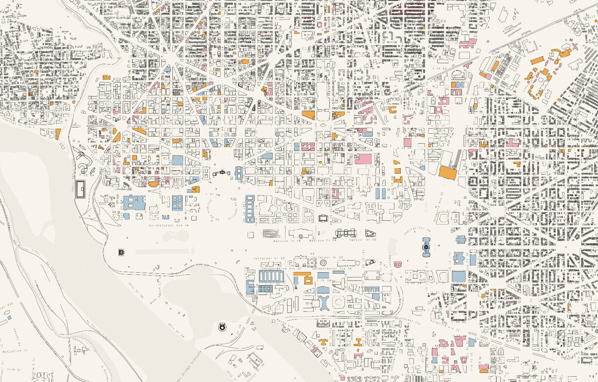
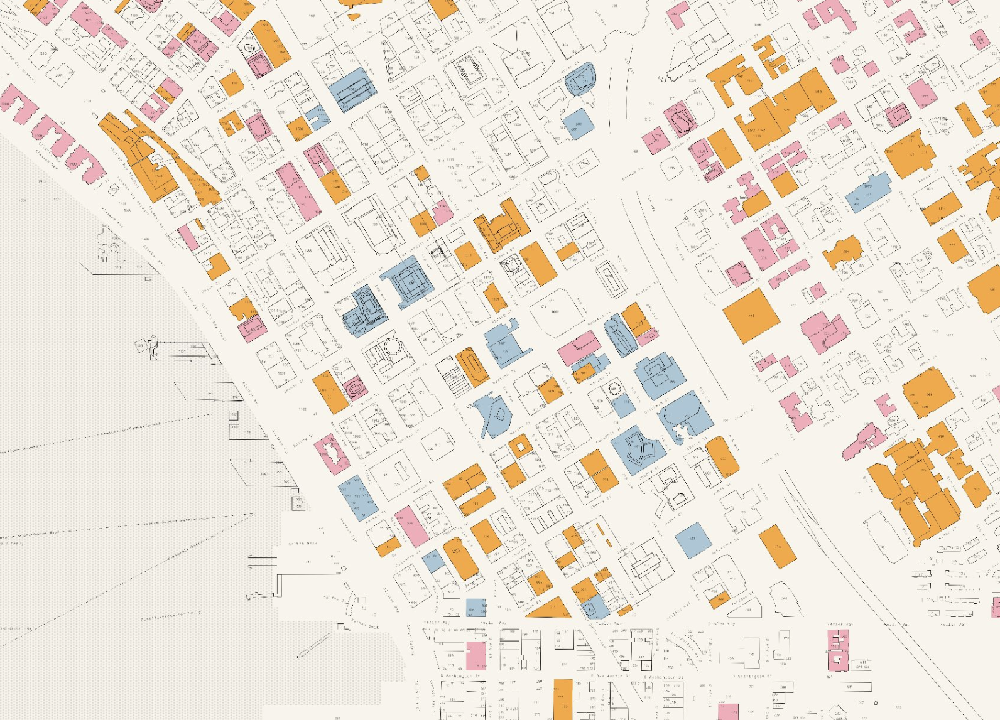
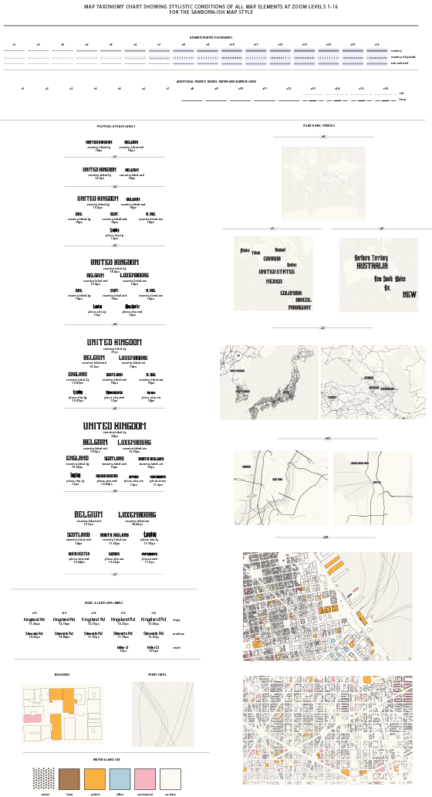
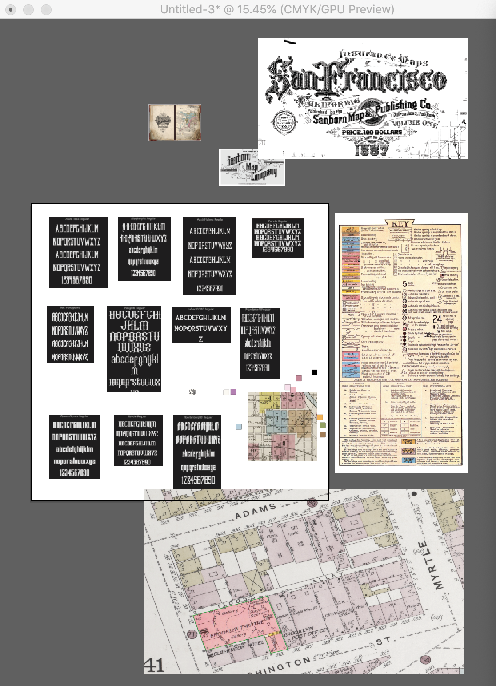

Don't tell, but I spent at least a third of my day today designing a map.


How do you design a map?
I believe the process starts at intentional ideation. While many people interpret maps to be a singular document, I think that each component ought to be meticulously reviewed, heavily questioned, purposefully designed and redesigned. When first creating a map, either by hand or by design tools, the initial step is to observe critically, then interate with intent. Thoughtful ideation helps to implement this process. Maps ought to be designed simply yet informatively, the density ought to be truthful yet legible, and the colours ought to be harmonious yet striking.
When I start designing a map, I try start off following a propery taxonpmy chart.
But if I'm going to be honest with you, I usually just work off a document like this.

Creation is the next critical step in cartographic design. But where creation starts is a bit of a toss up. For sketch maps, I kinda just go for it. For web maps, this step is critical and a bit more involved. If I need to fix up some data, I'll usually use QGIS as my preferred platform. I'll open up Illustrator, Sketch and Colourbox.io as my design tool suite. Updating a taxonomy chart at each iteration is a bit of work, so I store most of my quick thoughts in document next to the taxonpmy chart. Although it isn't as polished, it records my thought process and I don't really have to worry about making it legible beyond myself. The best workflow is the one that lets you work at the speed of thought.